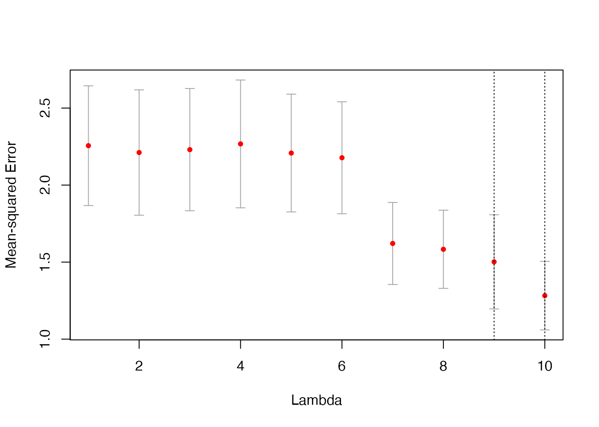
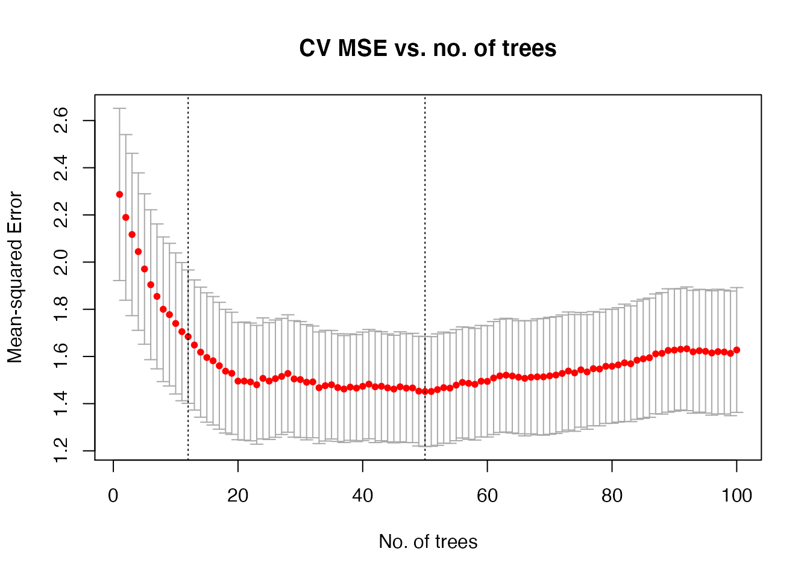

kfoldcv
kfoldcv.RmdThe main function in the cvwrapr package is kfoldcv which performs K-fold cross-validation (CV). In this vignette, we go through a series of examples showing how it can be used.
glmnet
Let’s set up some fake data:
set.seed(1)
nobs <- 100; nvars <- 10
x <- matrix(rnorm(nobs * nvars), nrow = nobs)
y <- rowSums(x[, 1:2]) + rnorm(nobs)If we used glmnet’s cv.glmnet function to perform CV, the call would look like this:
An equivalent call using kfoldcv would look like this.
Apart from x and y, kfoldcv needs train_fun and predict_fun which are the training and prediction functions respectively.
The returned objects from kfoldcv and cv.glmnet are slightly different:
names(glmnet_fit)
#> [1] "lambda" "cvm" "cvsd" "cvup" "cvlo"
#> [6] "nzero" "call" "name" "glmnet.fit" "lambda.min"
#> [11] "lambda.1se" "index"
names(cv_fit)
#> [1] "lambda" "cvm" "cvsd" "cvup" "cvlo"
#> [6] "lambda.min" "lambda.1se" "index" "name" "overallfit"Importantly though, the CV computations are the same:
library(testthat)
expect_equal(glmnet_fit$lambda, cv_fit$lambda)
expect_equal(glmnet_fit$cvm, cv_fit$cvm)
expect_equal(glmnet_fit$cvsd, cv_fit$cvsd)glmnet with function argumentskfoldcv works with more complicated function calls as well. For example, let’s say we want to fit a binomial model with observation weights:
biny <- ifelse(y > 0, 1, 0)
weights <- rep(1:2, length.out = nobs)
set.seed(1)
glmnet_fit <- cv.glmnet(x, biny, family = "binomial", weights = weights)Here is the equivalent call with kfoldcv. We now have 3 extra parameters:
train_params: A list of function arguments to be passed to train_fun for model-fitting (excluding the data matrix x and the response y).predict_params: A list of function arguments to be passed to predict_fun for prediction (excluding the fitted model object, new data matrix newx and the lambda sequence s). Notice here that we had to pass type = "response" to the prediction function: this is because glmnet returns the linear predictor by default, whereas kfoldcv expects the predictions to be on the scale of the response variable.train_row_params: A vector of names of function arguments that should be subsetted when performing CV.
set.seed(1)
cv_fit <- kfoldcv(x, biny, family = "binomial",
train_fun = glmnet, predict_fun = predict,
train_params = list(family = "binomial",
weights = weights),
predict_params = list(type = "response"),
train_row_params = c("weights"))Again, the CV computations are the same:
expect_equal(glmnet_fit$lambda, cv_fit$lambda)
expect_equal(glmnet_fit$cvm, cv_fit$cvm)
expect_equal(glmnet_fit$cvsd, cv_fit$cvsd)glmnet with excludeLet’s look at a glmnet example with exclude. First, let’s create some data such that the x matrix is sparse:
set.seed(101)
x[sample(seq(length(x)), 4 * nobs * nvars / 5)] <- 0
y <- rowSums(x[, 1:2]) + rnorm(nobs)Sometimes, we might want to exclude variables which are too sparse. In the code below, we exclude variables that are more than 80% sparse. Note that we are passing a function to the exclude argument, functionality that is only available in glmnet version 4.1-2 and later.
filter <- function(x, ...) which(colMeans(x == 0) > 0.8)
foldid <- sample(rep(seq(5), length = nobs))
glmnet_fit <- cv.glmnet(x, y, foldid = foldid, exclude = filter)Of course, we could pass the filter along to kfoldcv via train_params:
cv_fit <- kfoldcv(x, y, train_fun = glmnet, predict_fun = predict,
train_params = list(exclude = filter), foldid = foldid)
expect_equal(glmnet_fit$lambda, cv_fit$lambda)
expect_equal(glmnet_fit$cvm, cv_fit$cvm)
expect_equal(glmnet_fit$cvsd, cv_fit$cvsd)If we have an earlier version of glmnet which only allows the exclude argument to take a vector of indices, we can use kfoldcv to achieve the same result:
train_fun <- function(x, y) {
exclude <- which(colMeans(x == 0) > 0.8)
if (length(exclude) == 0) {
model <- glmnet(x, y)
} else {
model <- glmnet(x[, -exclude, drop = FALSE], y)
}
return(list(lambda = model$lambda,
exclude = exclude,
model = model))
}
predict_fun <- function(object, newx, s) {
if (length(object$exclude) == 0) {
predict(object$model, newx = newx, s = s)
} else {
predict(object$model, newx = newx[, -object$exclude, drop = FALSE], s = s)
}
}
cv_fit <- kfoldcv(x, y, train_fun = train_fun, predict_fun = predict_fun,
foldid = foldid)
expect_equal(glmnet_fit$lambda, cv_fit$lambda)
expect_equal(glmnet_fit$cvm, cv_fit$cvm)
expect_equal(glmnet_fit$cvsd, cv_fit$cvsd)Some notes of caution are in order:
train_fun must take in the design matrix as x and the response as y. In its return value, it must have the lambda sequence as the named element lambda.predict_fun must take in the output of train_fun as object and the new data matrix as newx. It must also have an argument (s by default) that takes in a lambda sequence, and predict_fun must return a matrix of predictions, each column corresponding to one value of lambda.The loss function used in CV is controlled by two function arguments: type.measure and family. To see all possible type.measure values for each family, run availableTypeMeasures():
availableTypeMeasures()
#> $gaussian
#> [1] "deviance" "mse" "mae"
#>
#> $binomial
#> [1] "deviance" "class" "auc" "mse" "mae"
#>
#> $poisson
#> [1] "deviance" "mse" "mae"
#>
#> $cox
#> [1] "deviance" "C"
#>
#> $multinomial
#> [1] "deviance" "class" "mse" "mae"
#>
#> $mgaussian
#> [1] "deviance" "mse" "mae"
#>
#> $GLM
#> [1] "deviance" "mse" "mae"The default is type.measure = "deviance" and family = "gaussian", which corresponds to mean-squared error. Below is an example of misclassification loss with a binary response:
biny <- ifelse(y > 0, 1, 0)
glmnet_fit <- cv.glmnet(x, biny, family = "binomial",
type.measure = "class", foldid = foldid)
cv_fit <- kfoldcv(x, biny, family = "binomial", type.measure = "class",
train_fun = glmnet, predict_fun = predict,
train_params = list(family = "binomial"),
predict_params = list(type = "response"),
foldid = foldid)
expect_equal(glmnet_fit$lambda, cv_fit$lambda)
expect_equal(glmnet_fit$cvm, cv_fit$cvm)
expect_equal(glmnet_fit$cvsd, cv_fit$cvsd)There seems to be a bit of duplication in that we have to specify family = "binomial" as an argument to kfoldcv() as well as in the list provided to train_params. This duplication is to allow for greater generality for train_fun. In glmnet, the type of model being fit is defined by an argument named family, so in theory we could extract the family value from train_params to determine the type of model being fit. However, not all model-fitting functions will have a “family” argument.
Let’s look at a non-glmnet example. Here, I want to do principal components (PC) regression and I want to cross-validate the number of PCs to include in the model. Let’s use our non-sparse fake data again:
set.seed(1)
nobs <- 100; nvars <- 10
x <- matrix(rnorm(nobs * nvars), nrow = nobs)
y <- rowSums(x[, 1:2]) + rnorm(nobs)The pls package can perform PC regression with pcr(), but its interface is quite different from what kfoldcv() needs. Recall that train_fun must take the data matrix, response and hyperparameter values as x, y and lambda respectively. predict_fun must take the output of train_fun, the new data matrix and the hyperparameter values as object, newx and s respectively. The code below shows how we can write train_fun and predict_fun for the PC regression problem:
library(pls)
# lambda represents no. of PCs
train_fun <- function(x, y, lambda) {
df <- data.frame(x, y)
model <- pls::pcr(y ~ ., data = df, ncomp = max(lambda))
return(list(lambda = lambda, model = model))
}
predict_fun <- function(object, newx, s) {
preds <- predict(object$model, newdata = newx, ncomp = s)
return(array(preds,
dim = c(nrow(newx), length(s))))
}
set.seed(2)
lambda <- 1:10
cv_fit <- kfoldcv(x, y, lambda = lambda,
train_fun = train_fun, predict_fun = predict_fun)kfoldcv() returns an object of class “cv_obj”, which is equipped with a plot method much like those for cv.glmnet objects. The code below shows how we might plot a CV curve for PC regression:
plot(cv_fit, log.lambda = FALSE)
Notice that in determining the lambda.1se value, the plot method correctly determined that it should be looking at smaller values of lambda (corresponding to fewer PCs), instead of larger values of lambda, as is usually the case in glmnet. How did it figure it out? When computing the lambda.1se value, kfoldcv looks for the smallest model such that its CV error is within 1 SE of the minimum CV error. In doing so, it assumes that the lambda sequence provided to it is ordered from smallest model to largest model. In this example, we provided lambda <- 1:10. Compare that to the glmnet examples, where lambda is ordered from largest to smallest.
gbm
Let’s look at another non-glmnet example: gradient boosting with the gbm package. In this first example, we want to cross-validate the number of trees to be included in our boosting ensemble. As with PC regression, we need to write our own train_fun and predict_fun to interface correctly with kfoldcv.
library(gbm)
# lambda represents # of trees
train_fun <- function(x, y, lambda) {
df <- data.frame(x, y)
model <- gbm::gbm(y ~ ., data = df, n.trees = max(lambda),
distribution = "gaussian")
return(list(lambda = lambda, model = model))
}
predict_fun <- function(object, newx, s) {
newdf <- data.frame(newx)
predict(object$model, newdata = newdf, n.trees = s)
}
set.seed(3)
lambda <- 1:100
cv_fit <- kfoldcv(x, y, lambda = lambda,
train_fun = train_fun, predict_fun = predict_fun)Again, we can plot a CV curve. Notice how we can rename the x-axis and add a title:
plot(cv_fit, log.lambda = FALSE, xlab = "No. of trees",
main = "CV MSE vs. no. of trees")
Next, let’s try to cross-validate for a different parameter: interaction.depth. Notice that the internals of train_fun and predict_fun look quite different from before. This is because gbm has the ability to predict for any number of trees as long as it is smaller than that in the fitted model: this allows us to fit just one model for the whole lambda sequence. For interaction.depth, we will have to fit one model for each interaction.depth.
# lambda represents interaction depth
train_fun <- function(x, y, lambda) {
df <- data.frame(x, y)
model <- lapply(lambda, function(i) gbm::gbm(y ~ ., data = df,
interaction.depth = i,
distribution = "gaussian"))
return(list(lambda = lambda, model = model))
}
predict_fun <- function(object, newx, s) {
newdf <- data.frame(newx)
preds <- lapply(object$model,
function(obj) predict(obj, newdata = newdf,
n.trees = obj$n.trees))
return(matrix(unlist(preds), nrow = nrow(newdf)))
}
set.seed(3)
lambda <- 1:5
cv_fit <- kfoldcv(x, y, lambda = lambda,
train_fun = train_fun, predict_fun = predict_fun)
plot(cv_fit, log.lambda = FALSE, xlab = "Interaction depth",
main = "CV MSE vs. interaction depth")kfoldcv
kfoldcv has a few other capabilities worth mentioning here:
foldid: An optional vector of values between 1 and nfolds (inclusive) identifying which fold each observation is in. Note that kfoldcv actually works even if foldid does not take values between 1 and nfolds, but for ease of use it is recommended that users do so.keep: If set to TRUE, kfoldcv returns the matrix of pre-validated fits as well as the foldid vector used in CV. Default is FALSE.save_cvfits: If set to TRUE, kfoldcv returns the intermediate model fits for each CV fold. This is useful if the user wants to inspect the intermediate fits (e.g model coefficients) or compute some intermediate statistic (e.g. how many times a feature appears across the folds). However, bear in mind that this could greatly inflate the size of the object kfoldcv returns. Default is FALSE.parallel: If set to TRUE, model-fitting for each CV fold can be done in parallel. A parallel backend must be registered first. Below is a code example comparing a call to kfoldcv with and without parallel computing, using the vanilla glmnet example.
# without parallel computing
set.seed(3)
foldid <- sample(rep(1:5, length.out = nrow(x)))
cv_fit1 <- kfoldcv(x, y, foldid = foldid, train_fun = glmnet,
predict_fun = predict)
# with parallel computing
library(parallel)
library(doParallel)
cl <- parallel::makeCluster(2)
doParallel::registerDoParallel(cl)
cv_fit2 <- kfoldcv(x, y, foldid = foldid, train_fun = glmnet,
predict_fun = predict, parallel = TRUE)
parallel::stopCluster(cl)
# check that the two fits are the same
expect_equal(cv_fit1$lambda, cv_fit2$lambda)
expect_equal(cv_fit1$cvm, cv_fit2$cvm)
expect_equal(cv_fit1$cvsd, cv_fit2$cvsd)